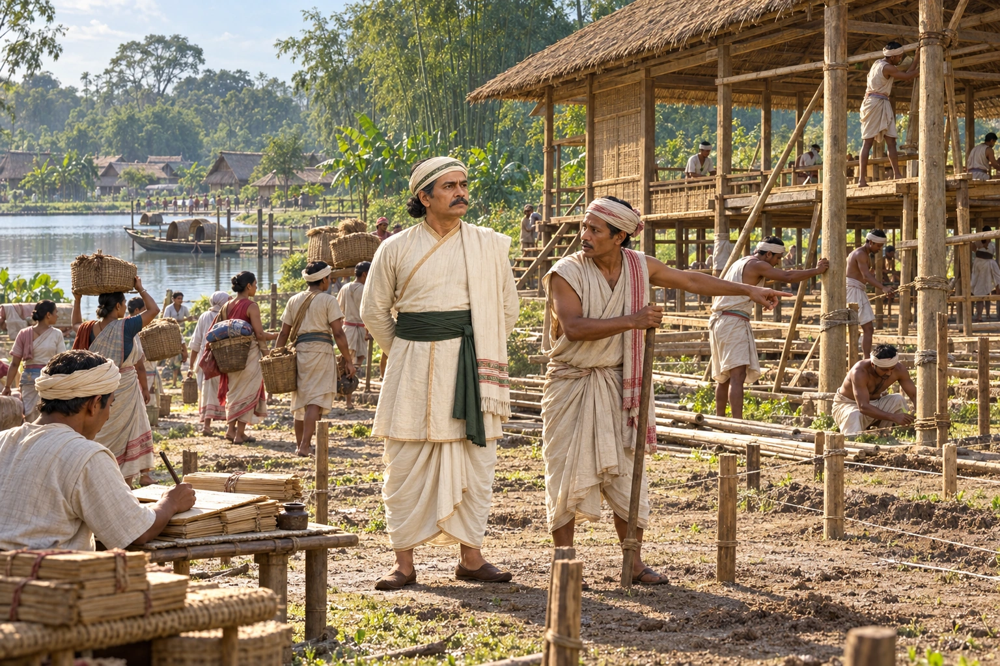

Sarbananda Singha's Capital at Bengmara
1791 · The Moamoria risings

The Moamoria leader Sarbananda Singha takes the title Swargadeo and moves his capital from Rangagarah to Bengmara in present-day Tinsukia.
Bengmara’s founding is supported by the Tinsukia district account. Town layout, building work and tank setting are illustrative; no exact original site plan or named minister’s likeness is asserted.
Sources
People: Sarbananda Singha